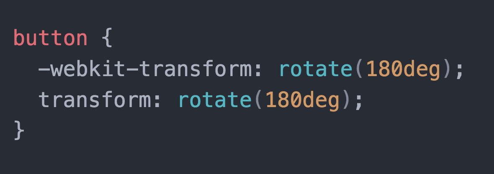
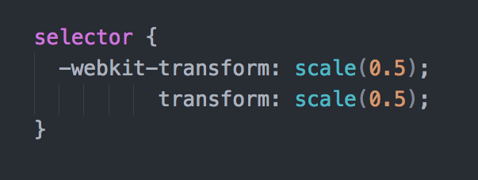
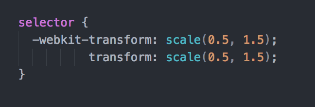
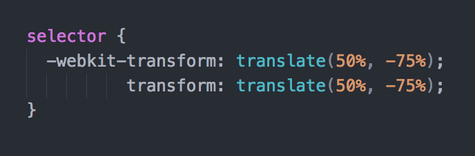
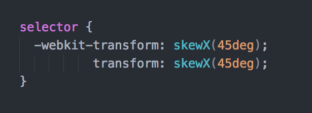
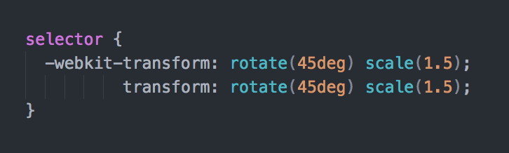
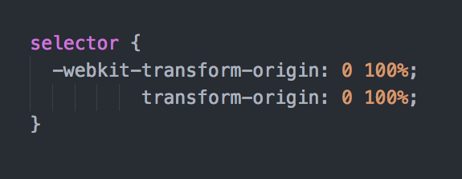
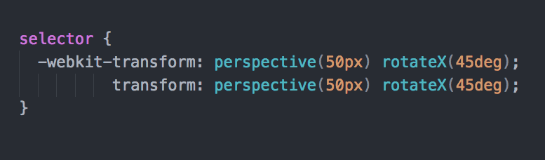
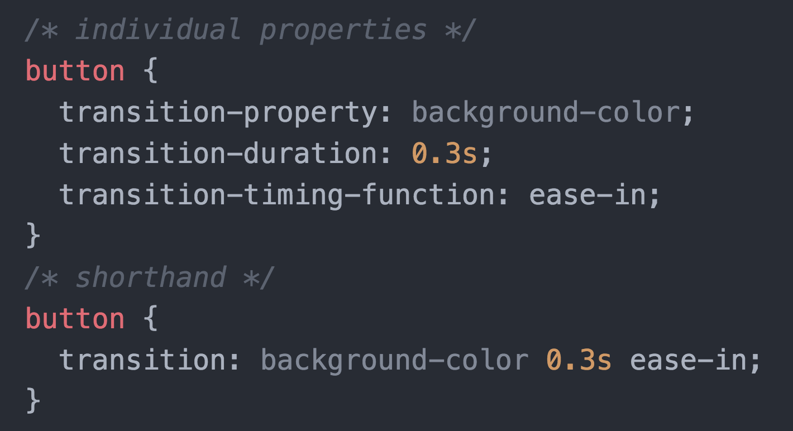

CSS3 Transform
With the arrival of CSS3 came new ways to visually manipulate elements, both in a 2D plane and 3D space.
Transform Syntax
Transform Values
The transform property accepts a range of values, including:
- Skew
- Rotate
- Scale
- Translate
- Perspective
Codepen Demo
Click here
Rotate
Scale
Scale X & Scale Y
Elements can also be scaled along both the X & Y axis separately. This can happen using either scaleX, scaleY or using two values inside scale.
Translate
Translate moves an element and can be used similarly to scale, whereby translateX, translateY or by adding two values inside translate.
Skew X & Skew Y
Skew also works along the X & Y axis and distorts the target using degrees.
Multiple Transforms
Multiple types of transform can also be added to an element at once.
Transform Origin
Elements are transformed from their centre point by default. Transform origin provides the ability to change this.
Perspective
Perspective provides an element a 3D space between the user and the Z plane. The larger the value, the more subtle the effect.
3D Transforms
Elements can also have scale, translate, rotate applied to their Z axis when combined with perspective.
Transition
Transition
Transitions allow elements to move from one state to another across a given period of time and with specific easing values in reaction to a state change.

Transition
The transition can only be applied on CSS properties that have a mid-point.
For example, the display property cannot be animated, as
there is no mid-point.
Cubic Bezier
All transition-timing-function values are cubic bezier
curves, including the keyword values. This means that we can make our
own cubic bezier curve to gain complete control of the easing of
a transition.
Animation
Animation
Sometimes when you're transitioning an element, you would like more control over the state at certain points of the change. This is where animations come in.
Animation Key Points
-
Can be set to either run immediately on load, or can be initiated in reaction to a state change or event.
-
Provide more fine-grained control over animation state.
-
Allows for easy transition of multiple properties.
Animation Declaration
The @keyframes rule is used to define an animation
and is immediately followed by the animation name.
Stages can be defined using percentage values to give more control. The
keywords from and to can also be used if the
animation is just going between two stages.
Animation Properties
To add the declared @keyframes animation to an element
you need to provide animation properties. These include:
Inspiration
- Codrops - Buttons
- Codrops - Nav Overlay
- Codrops - Header Nav
- Codrops - Search UI
Animation Lab
Complete this animation exercise.
Once completed, move onto your final project and find somewhere to add either some transforms, transitions or animations.
Key Takeaways
-
Transforms can be used to manipulate elements across a 2D place and also a 3D space.
-
Transitions can be applied to elements to create gradual changes from one state to another.
-
Animations can be used when more fine-grained control over animation state is required.